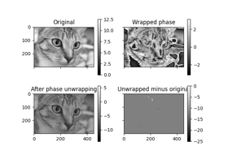
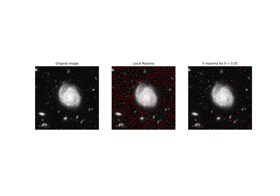

skimage.exposure#
Performs Gamma Correction on the input image. |
|
Performs Logarithmic correction on the input image. |
|
Performs Sigmoid Correction on the input image. |
|
Return cumulative distribution function (cdf) for the given image. |
|
Contrast Limited Adaptive Histogram Equalization (CLAHE). |
|
Return image after histogram equalization. |
|
Return histogram of image. |
|
Determine if an image is low contrast. |
|
Adjust an image so that its cumulative histogram matches that of another. |
|
Return image after stretching or shrinking its intensity levels. |
- skimage.exposure.adjust_gamma(image, gamma=1, gain=1)[source]#
Performs Gamma Correction on the input image.
Also known as Power Law Transform. This function transforms the input image pixelwise according to the equation
O = I**gammaafter scaling each pixel to the range 0 to 1.- Parameters:
- imagendarray
Input image.
- gammafloat, optional
Non negative real number. Default value is 1.
- gainfloat, optional
The constant multiplier. Default value is 1.
- Returns:
- outndarray
Gamma corrected output image.
See also
Notes
For gamma greater than 1, the histogram will shift towards left and the output image will be darker than the input image.
For gamma less than 1, the histogram will shift towards right and the output image will be brighter than the input image.
References
Examples
>>> from skimage import data, exposure, img_as_float >>> image = img_as_float(data.moon()) >>> gamma_corrected = exposure.adjust_gamma(image, 2) >>> # Output is darker for gamma > 1 >>> image.mean() > gamma_corrected.mean() True


- skimage.exposure.adjust_log(image, gain=1, inv=False)[source]#
Performs Logarithmic correction on the input image.
This function transforms the input image pixelwise according to the equation
O = gain*log(1 + I)after scaling each pixel to the range 0 to 1. For inverse logarithmic correction, the equation isO = gain*(2**I - 1).- Parameters:
- imagendarray
Input image.
- gainfloat, optional
The constant multiplier. Default value is 1.
- invfloat, optional
If True, it performs inverse logarithmic correction, else correction will be logarithmic. Defaults to False.
- Returns:
- outndarray
Logarithm corrected output image.
See also
References
- skimage.exposure.adjust_sigmoid(image, cutoff=0.5, gain=10, inv=False)[source]#
Performs Sigmoid Correction on the input image.
Also known as Contrast Adjustment. This function transforms the input image pixelwise according to the equation
O = 1/(1 + exp*(gain*(cutoff - I)))after scaling each pixel to the range 0 to 1.- Parameters:
- imagendarray
Input image.
- cutofffloat, optional
Cutoff of the sigmoid function that shifts the characteristic curve in horizontal direction. Default value is 0.5.
- gainfloat, optional
The constant multiplier in exponential’s power of sigmoid function. Default value is 10.
- invbool, optional
If True, returns the negative sigmoid correction. Defaults to False.
- Returns:
- outndarray
Sigmoid corrected output image.
See also
References
[1]Gustav J. Braun, “Image Lightness Rescaling Using Sigmoidal Contrast Enhancement Functions”, http://markfairchild.org/PDFs/PAP07.pdf
- skimage.exposure.cumulative_distribution(image, nbins=256)[source]#
Return cumulative distribution function (cdf) for the given image.
- Parameters:
- imagearray
Image array.
- nbinsint, optional
Number of bins for image histogram.
- Returns:
- img_cdfarray
Values of cumulative distribution function.
- bin_centersarray
Centers of bins.
See also
References
Examples
>>> from skimage import data, exposure, img_as_float >>> image = img_as_float(data.camera()) >>> hi = exposure.histogram(image) >>> cdf = exposure.cumulative_distribution(image) >>> all(cdf[0] == np.cumsum(hi[0])/float(image.size)) True


- skimage.exposure.equalize_adapthist(image, kernel_size=None, clip_limit=0.01, nbins=256)[source]#
Contrast Limited Adaptive Histogram Equalization (CLAHE).
An algorithm for local contrast enhancement, that uses histograms computed over different tile regions of the image. Local details can therefore be enhanced even in regions that are darker or lighter than most of the image.
- Parameters:
- image(M[, …][, C]) ndarray
Input image.
- kernel_sizeint or array_like, optional
Defines the shape of contextual regions used in the algorithm. If iterable is passed, it must have the same number of elements as
image.ndim(without color channel). If integer, it is broadcasted to eachimagedimension. By default,kernel_sizeis 1/8 ofimageheight by 1/8 of its width.- clip_limitfloat, optional
Clipping limit, normalized between 0 and 1 (higher values give more contrast).
- nbinsint, optional
Number of gray bins for histogram (“data range”).
- Returns:
- out(M[, …][, C]) ndarray
Equalized image with float64 dtype.
See also
Notes
- For color images, the following steps are performed:
The image is converted to HSV color space
The CLAHE algorithm is run on the V (Value) channel
The image is converted back to RGB space and returned
For RGBA images, the original alpha channel is removed.
Changed in version 0.17: The values returned by this function are slightly shifted upwards because of an internal change in rounding behavior.
References
3D adaptive histogram equalization
3D adaptive histogram equalization
- skimage.exposure.equalize_hist(image, nbins=256, mask=None)[source]#
Return image after histogram equalization.
- Parameters:
- imagearray
Image array.
- nbinsint, optional
Number of bins for image histogram. Note: this argument is ignored for integer images, for which each integer is its own bin.
- maskndarray of bools or 0s and 1s, optional
Array of same shape as
image. Only points at which mask == True are used for the equalization, which is applied to the whole image.
- Returns:
- outfloat array
Image array after histogram equalization.
Notes
This function is adapted from [1] with the author’s permission.
References
3D adaptive histogram equalization
3D adaptive histogram equalizationVisual image comparisonRank filters
- skimage.exposure.histogram(image, nbins=256, source_range='image', normalize=False, *, channel_axis=None)[source]#
Return histogram of image.
Unlike
numpy.histogram, this function returns the centers of bins and does not rebin integer arrays. For integer arrays, each integer value has its own bin, which improves speed and intensity-resolution.If
channel_axisis not set, the histogram is computed on the flattened image. For color or multichannel images, setchannel_axisto use a common binning for all channels. Alternatively, one may apply the function separately on each channel to obtain a histogram for each color channel with separate binning.- Parameters:
- imagearray
Input image.
- nbinsint, optional
Number of bins used to calculate histogram. This value is ignored for integer arrays.
- source_rangestring, optional
‘image’ (default) determines the range from the input image. ‘dtype’ determines the range from the expected range of the images of that data type.
- normalizebool, optional
If True, normalize the histogram by the sum of its values.
- channel_axisint or None, optional
If None, the image is assumed to be a grayscale (single channel) image. Otherwise, this parameter indicates which axis of the array corresponds to channels.
- Returns:
- histarray
The values of the histogram. When
channel_axisis not None, hist will be a 2D array where the first axis corresponds to channels.- bin_centersarray
The values at the center of the bins.
See also
Examples
>>> from skimage import data, exposure, img_as_float >>> image = img_as_float(data.camera()) >>> np.histogram(image, bins=2) (array([ 93585, 168559]), array([0. , 0.5, 1. ])) >>> exposure.histogram(image, nbins=2) (array([ 93585, 168559]), array([0.25, 0.75]))

Comparing edge-based and region-based segmentation
Comparing edge-based and region-based segmentationRank filters
- skimage.exposure.is_low_contrast(image, fraction_threshold=0.05, lower_percentile=1, upper_percentile=99, method='linear')[source]#
Determine if an image is low contrast.
- Parameters:
- imagearray-like
The image under test.
- fraction_thresholdfloat, optional
The low contrast fraction threshold. An image is considered low- contrast when its range of brightness spans less than this fraction of its data type’s full range. [1]
- lower_percentilefloat, optional
Disregard values below this percentile when computing image contrast.
- upper_percentilefloat, optional
Disregard values above this percentile when computing image contrast.
- methodstr, optional
The contrast determination method. Right now the only available option is “linear”.
- Returns:
- outbool
True when the image is determined to be low contrast.
Notes
For boolean images, this function returns False only if all values are the same (the method, threshold, and percentile arguments are ignored).
References
Examples
>>> image = np.linspace(0, 0.04, 100) >>> is_low_contrast(image) True >>> image[-1] = 1 >>> is_low_contrast(image) True >>> is_low_contrast(image, upper_percentile=100) False
- skimage.exposure.match_histograms(image, reference, *, channel_axis=None)[source]#
Adjust an image so that its cumulative histogram matches that of another.
The adjustment is applied separately for each channel.
- Parameters:
- imagendarray
Input image. Can be gray-scale or in color.
- referencendarray
Image to match histogram of. Must have the same number of channels as image.
- channel_axisint or None, optional
If None, the image is assumed to be a grayscale (single channel) image. Otherwise, this parameter indicates which axis of the array corresponds to channels.
- Returns:
- matchedndarray
Transformed input image.
- Raises:
- ValueError
Thrown when the number of channels in the input image and the reference differ.
References
- skimage.exposure.rescale_intensity(image, in_range='image', out_range='dtype')[source]#
Return image after stretching or shrinking its intensity levels.
The desired intensity range of the input and output,
in_rangeandout_rangerespectively, are used to stretch or shrink the intensity range of the input image. See examples below.- Parameters:
- imagearray
Image array.
- in_range, out_rangestr or 2-tuple, optional
Min and max intensity values of input and output image. The possible values for this parameter are enumerated below.
- ‘image’
Use image min/max as the intensity range.
- ‘dtype’
Use min/max of the image’s dtype as the intensity range.
- dtype-name
Use intensity range based on desired
dtype. Must be valid key inDTYPE_RANGE.- 2-tuple
Use
range_valuesas explicit min/max intensities.
- Returns:
- outarray
Image array after rescaling its intensity. This image is the same dtype as the input image.
See also
Notes
Changed in version 0.17: The dtype of the output array has changed to match the input dtype, or float if the output range is specified by a pair of values.
Examples
By default, the min/max intensities of the input image are stretched to the limits allowed by the image’s dtype, since
in_rangedefaults to ‘image’ andout_rangedefaults to ‘dtype’:>>> image = np.array([51, 102, 153], dtype=np.uint8) >>> rescale_intensity(image) array([ 0, 127, 255], dtype=uint8)
It’s easy to accidentally convert an image dtype from uint8 to float:
>>> 1.0 * image array([ 51., 102., 153.])
Use
rescale_intensityto rescale to the proper range for float dtypes:>>> image_float = 1.0 * image >>> rescale_intensity(image_float) array([0. , 0.5, 1. ])
To maintain the low contrast of the original, use the
in_rangeparameter:>>> rescale_intensity(image_float, in_range=(0, 255)) array([0.2, 0.4, 0.6])
If the min/max value of
in_rangeis more/less than the min/max image intensity, then the intensity levels are clipped:>>> rescale_intensity(image_float, in_range=(0, 102)) array([0.5, 1. , 1. ])
If you have an image with signed integers but want to rescale the image to just the positive range, use the
out_rangeparameter. In that case, the output dtype will be float:>>> image = np.array([-10, 0, 10], dtype=np.int8) >>> rescale_intensity(image, out_range=(0, 127)) array([ 0. , 63.5, 127. ])
To get the desired range with a specific dtype, use
.astype():>>> rescale_intensity(image, out_range=(0, 127)).astype(np.int8) array([ 0, 63, 127], dtype=int8)
If the input image is constant, the output will be clipped directly to the output range: >>> image = np.array([130, 130, 130], dtype=np.int32) >>> rescale_intensity(image, out_range=(0, 127)).astype(np.int32) array([127, 127, 127], dtype=int32)
Phase UnwrappingExtremaRank filters